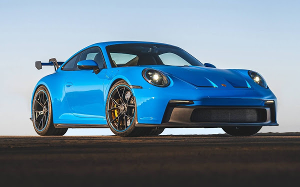
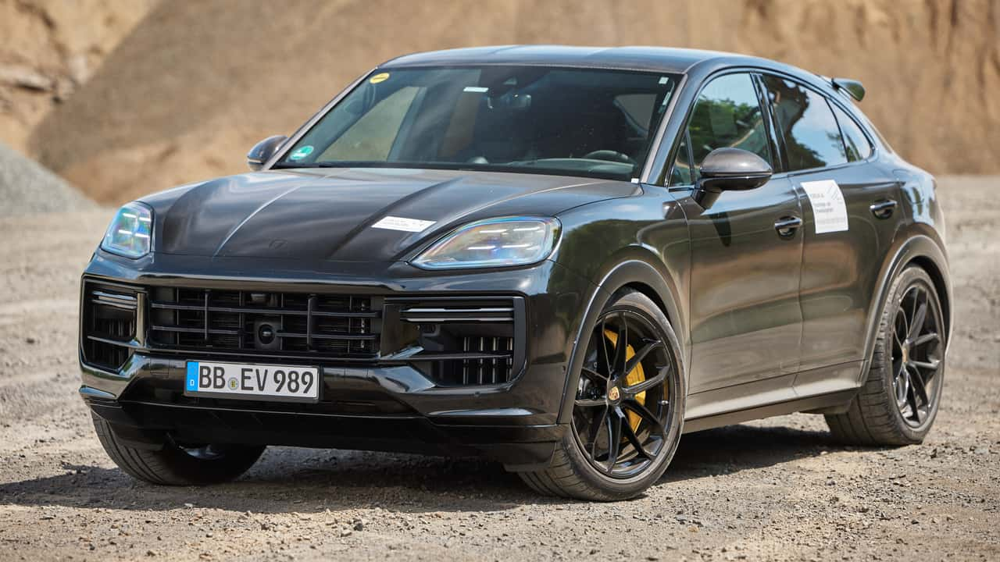

Espaço da PORSCHE

Descrição do Automóvel:
Modelo: Porsche 911 GT3
Ano de lançamento: 2022
Preço: FIPE R$ 3.909.038
Motor: Está equipado com um Motor 6.5 V12 que gera 700 cavalos de potência com o uso intensivo em fibra de carbono.
Aceleração: De 0 a 100 km/h em 3,2 segundos

Descrição do Automóvel:
Modelo: PORSCHE CAYENNE
Ano de lançamento: 2022
Preço: R$ 1.769.000
Motor: 4,0 l 6 cilindros
Aceleração: De 0 a 100 em 3,3s

Descrição do Automóvel:
Modelo: PORSCHE 718
Ano de lançamento: 2024
Preço: R$ 519.000
Motor: 4,0 l 6 cilindros
Aceleração: de 0 a 100 km/h leva apenas 4,0 segundos.